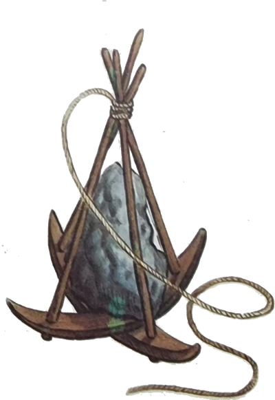
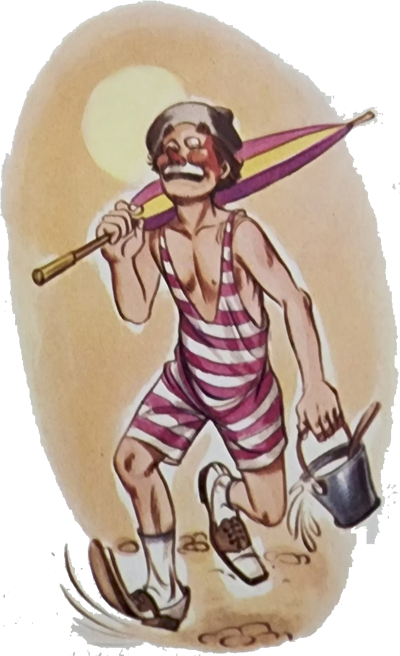
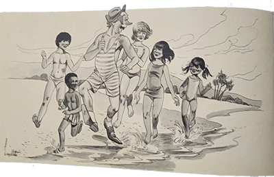
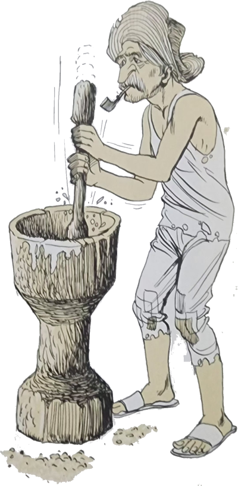
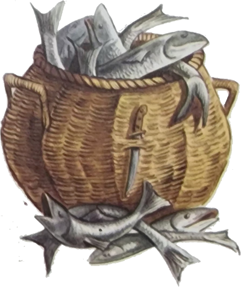
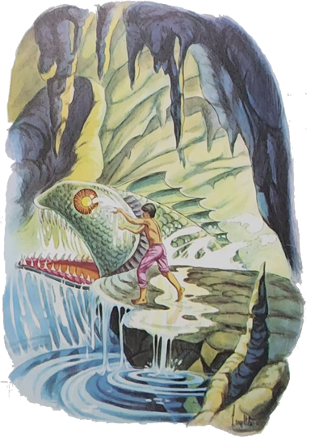
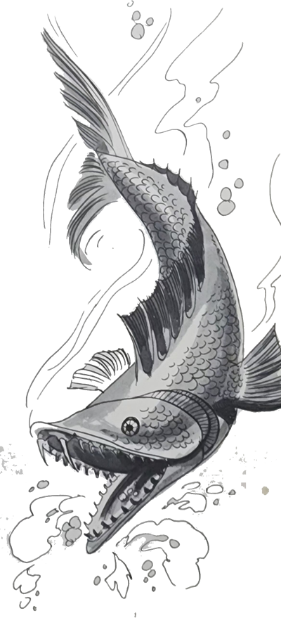
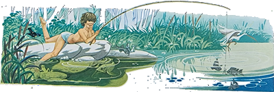

Nossos amigos haviam passado a primeira noite no litoral, numa casa rústica de pescadores. Tinham dormido em esteiras e acordado não muito dispostos. Ei-los passeando pela praia, todos ainda com cara de sono. Iberê propôs que fossem por roupas de banho pois achava o mar convidativo. Mas o Arrelia assustou-se e não concordou. Ainda fazia frio! Quando o Sol esquentasse mais, aí sim! Começaram a colher conchinhas e foi um tal de empurrar . . . Tudo porque o Arrelia dissera: :Vamos ver quem pega a mais bonita?: De repente, Sérgio, que se afastara dos outros, gritou de onde estava: “Que bicho feio! Socorro!” – e veio correndo na direção do Arrelia. Cautelosamente seguiram todos para o lugar indicado pelo menino. Era apenas um siri extraviado, e durante vários minutos divertiram-se a observá-lo.

Afinal o Arrelia achou que o Sol estava bastante quente para um banho de mar e correram para trocar-se.
Quando voltaram, vinham numa gritaria infernal. O motivo era a roupa de banho do Arrelia.
- Tenha dó! – disse Jaci. Esse maio deve ter mais de cinquenta anos! Ainda bem que esta praia é deserta, senão eu morreria de vergonha! E você vai tomar banho de chapéu, bengala e sapatos?
O Arrelia ficou espantado:
- É “verdaude”! Não é que me esqueci?
Espetou a bengala na areia, colocou-lhe o chapéu, tirou os sapatos e dispararam ao encontro das ondas.
Mais tarde voltaram à casa dos Pescadores para se trocarem.
- Agora é que vai ser fogo – disse o Arrelia.
- Por quê? – perguntou Marisa.
- Porque não tem chuveiro e só poderemos tirar o sal do corpo quando estivermos no hotel.
Todos se lamentaram mas tiveram de se conformar.
Já trocados, foram atraídos por um velho Pescador que preparava paçoca de carne-seca no pilão, sob uma cobertura de palha. Carlinhos, lembrando-se de sua recente aventura, manteve-se à distância temendo um convite para socar.
- O senhor não vai pescar com os outros? – perguntou o Arrelia, aproximando-se do velho caiçara.
Ele parou de socar e respondeu:
- É difícil eu ir pescar. Já estou muito velho. Quase sempre fico aqui fazendo outros serviços. Há mais alguns outros assim como eu. Já demos o que podíamos.
- Quer dizer que logo os Barcos vão chegar cheios de peixes, hein?
- Não sei se voltarão cheios de peixes, não. Parece que o Peixe de Olhos de Fogo está enxergando novamente. As pescarias ficam cada vez mais difíceis.
- Peixe de Olhos de Fogo? – surpreendeu-se o Arrelia.
- Conte isso, conte! – pediu Jaci chegando-se mais perto do pescador.

Os outros também se chegaram. O velho pegou umas esteiras, estendeu-as no chão e pediu-lhes que se sentassem nelas. Pôs-se então a contar, continuando o trabalho:
- Há milhares de anos que o Peixe de Olhos de Fogo mora numa gruta perto daqui. Quando este lugar começou a ser habitado, ele era um grande problema. Virava os barcos e engolia os pescadores, não deixava ninguém nadar. A coisa chegou a tal ponto que as pessoas estavam arriscadas a morrer de fome.
Aí um Pescador, meu parente, homem que não sabia o que era medo, resolveu acertar as coisas. Chamou o pessoal e disse:
- O Peixe de Olhos de Fogo vai matar toda a nossa gente de fome. Mal podemos pescar porque ele sempre aparece quando menos se espera, e vocês já sabem o que acontece. Viver assim não vale a pena. Resolvi procurar a gruta onde ele mora e pedir que nos deixe em paz.
- Essa é boa! E o tal peixe ia entender? – espantou-se o Arrelia.
- É claro! Pois ele é um peixe encantado que pensa, ouve e fala! – respondeu o pescador.
- O meu parente – continuou ele – estava mesmo resolvido a ir procurar o monstro. Todos começaram a pedir para ele não fazer aquilo. Ia ser morto sem dúvida.
Ele explicou que não via outro modo. Ou resolvia a situação ou estavam perdidos. Tratou de encontrar a gruta. Cada vez que o peixe surgia, o meu parente observava a direção tomada pelo monstro ao voltar. Pouco a pouco, foi-se aproximando de uns morros não muito longe daqui. Certo dia ele estava sentado em cima de um dos morros observando o mar à procura do peixe encantado quando viu o bruto surgir lá longe. Vinha devagar, os olhos faiscando à luz do Sol. Foi chegando, chegando, e sumiu no morro em que o meu parente estava sentado. Então era ali o esconderijo! O homem desceu cuidadosamente e nadou à procura da entrada da gruta.

Dentro dela havia mais terra do que água. Deu com o peixe e ficou o mais quieto possível. Percebeu que o monstro estava dormindo pois ele pode fechar os olhos. Que sorte! Procurou o lugar mais alto da gruta e ficou à espera.
Passado algum tempo, o peixe abriu os olhos. Grandes chamas começaram a sair deles. O lugar foi ficando quente e quase não dava para aguentar. Quando o peixe viu que tinha um homem na gruta, ficou furioso. Fez de tudo para ver se conseguia engolir o intruso. A sorte foi que ele estava num lugar alto e pode escapar das mordidas do bicho. Vendo que não conseguia nada, o peixe disse:
- O que você veio fazer na minha gruta? Não sabe que não gosto de ser incomodado?
- Vim pedir para nos deixar em paz – respondeu o meu parente.
O peixe quase pulou for a da água de tanta raiva e gritou:
- Em paz? Então vocês invadem os meus domínios e ainda querem viver em paz? O mar me pertence e não permito ninguém nele!
- Mas vamos morrer de fome! Tenha pena de nós!
O peixe deu uma gargalhada que fez tremer as paredes da gruta:
- Ter pena? Eu? Nem sonhando! Pois que morram! E quanto mais depressa, melhor!


O meu parente não conseguiu comover o monstro. Falou nos velhos, nas mulheres e nas criancinhas que dependiam do mar. Não adiantou nada. Quando não suportou mais o calor produzido pelos olhos do peixe, disse que desejava sair. Foi aí que teve a maior surpresa. O monstro lançou mais labaredas pelos enormes olhos e disse:
- Sair? Que Esperança! Daqui não sairá mais! Porém, como não quero ser muito mau, você pode escolher entre ser comido por mim e assado como um peixe. Que prefere?
O pobre do homem ficou ali, parado, esperando desmaiar de um momento para outro, tanto era o calor que fazia.
- E morreu? – perguntou Jaci, preocupada.
- Não morreu porque ele era um grande observador. Tinha notado que o peixe fazia de tudo para evitar que a água molhasse os seus olhos. Conforme as ondas batiam na gruta, o peixe piscava ou então erguia a cabeça o mais alto que podia. O meu parente teve uma ideia. Como de qualquer modo estava perdido, o melhor era morrer lutando. Saltou na água. O peixe abriu a boca, que mais parecia uma caverna, e veio na direção dele. Só o tamanho dos dentes já era suficiente para matar um homem de medo. Mas não aquele. Também era um bom nadador e escapou uma vez, duas. Na terceira, ele conseguiu jogar água nos olhos abertos do peixe. Foi um chiado só. O peixe começou a se debater e a gritar:
- Você me cegou! Agora vou ter de esperar cem anos até que os meus olhos se acendam de novo! Vai pagar o que fez! Ora se vai!
O meu parente não perdeu tempo. Aproveitou a cegueira do monstro e tratou de sair da gruta. Quando chegou aqui, contou a sua vitória e houve uma festa . . . A primeira festa da minha gente. No dia seguinte os barcos não foram atacados e voltaram carregados de peixes. Ninguém mais chegou a ver o monstro. Agora começou a faltar peixe novamente. Ainda ninguém viu desta vez o Peixe Olhos de Fogo, mas todos nós estamos acreditando que tenha terminado o prazo de cem anos e que os seus olhos voltaram a se acender. Por certo, desta vez ele não quer aparecer, com medo de alguém lhe apagar os olhos novamente. Contenta-se em espantar os peixes de longe.

- E por que alguém não vai até à gruta apagar outra vez os olhos desse sem-vergonha? – perguntou o Arrelia.
O Pescador fez um ar desconsolado e respondeu:
- Aí é que está o problema. Ninguém daqui sente coragem para fazer isso. Ou melhor: o único que tem coragem sou eu. Mas estou muito velho para uma aventura desse porte. Ah se aparecesse alguém . . .
Iberê levantou-se estabanadamente e exclamou esfregando as mãos:
- Olhe, Arrelia, que oportunidade para nós! Que aventura!
- Hein? Que “oportunidaude”? Que aventura? – perguntou o Arrelia, olhando assustado para o menino.
- Nós poderíamos ir ao lugar onde fica o peixe, e você jogaria água nos olhos dele!
- Eu? Que brincadeira! Você é meu amigo ou amigo do peixe?
O Pescador agarrou-se à oportunidade com unhas e dentes:
- Olhe que o senhor podia fazer isso!
E não parou de pedir ao Arrelia que fosse apagar os olhos de fogo do peixe encantado. Mencionou a gratidão que ele receberia daquela gente mais uma vez arriscada a morrer de fome.
O Arrelia acabou concordando, não antes de haver dado uma piscada às crianças. O pescador saiu depressa e voltou acompanhado dos outros velhos e das mulheres do lugarejo.
Quase que o Arrelia foi carregado. Uma das mulheres chegou a dizer:
- Se algum dia for colocada alguma estatua neste lugar, será a sua, Seu Arrelia. O Senhor é a nossa salvação!
Depois de devidamente orientado sobre a localização da gruta, o Arrelia e as crianças saíram. Iberê perguntou-lhe:
- Você vai mesmo apagar os olhos do tal peixe?
As outras crianças mostravam-se assustadas.
- Ora, então você acredita nessa estória do peixe encantado? – surpreendeu-se o Arrelia.
- Você acha que aquele homem estava mentindo? Ele falou com tanta seriedade!
- Não, Iberê. Ele não estava mentindo. Tanto ele como sua gente acreditam na lenda. Não compete a mim desiludi-los. A crença em coisas sobrenaturais faz parte da vida desse povo.
- E o que você pretende fazer?
- Dar umas voltas com vocês por aí e depois dizer que apaguei os olhos do tal peixe.
- Mas Arrelia! Isso é mentira! Você não vai fazer isso!
- Não, não é mentira. Essa gente acredita que certos acontecimentos corriqueiros são causados por interferências sobrenaturais. E o medo acaba por desanimá-los. Por certo há falta de peixe, mas o desânimo é que os está prejudicando. Se julgarem que o peixe encantado está outra vez cego, ficarão animados novamente, e sempre conseguirão pescar alguma coisa.
Ninguém achou motive para discordar do Arrelia e seguiram em direção do lugar onde habitava o Peixe de Olhos de Fogo.
- E por que vamos na direção da gruta? – perguntou Marisa pensativamente.
- Para dar a impressão de que estamos indo realmente lá! – exclamou o Arrelia, começando a girar a bengala.
Quando já estavam bem longe, o Arrelia sugeriu:
- Acho que estamos for a de vista, vamos até à praia continuar a catar conchinhas?
Ninguém discordou e eles recomeçaram. Foram andando, andando, e chegaram a uns morros bem à beira do mar.
- Olhe, Arrelia – disse Jaci. Não serão os morros dos quais falou aquele pescador?
Ainda segurando as últimas conchas que apanhara, o Arrelia procurou o que a menina havia indicado.
- É possível – respondeu ele. Mas também podem não ser. Afinal não serão esses os únicos morros existentes por aqui.
- Mas digamos que seja esse o local e que exista uma gruta. Você seria capaz de entrar nela?

- Já vem você com isso! Não está bem assim? Não vai querer que eu dê um mergulho, vai?
Quando chegaram mais perto notaram que um dos morros parecia ter uma abertura.
- Arrelia! Parece uma gruta! – gritou Marisa. Você não quer dar uma chegadinha lá?
- Que gente de morte – disse o Arrelia. Por que fazem questão que eu me molhe? Sabem que não há nenhum peixe encantado. E se houver? Querem que eu seja comido?
As crianças ficaram encabuladas.
- Vamos esquecer o tal peixe e continuar a apanhar conchinhas – propôs o Arrelia.
Assim fizeram. Aí o Arrelia sugeriu um confronto para ver quem possuía a concha mais bonita. Cada um estendeu a mão, menos o Arrelia.
- E você, Arrelia? – perguntou Carlinhos. Parece que está com medo.
O Arrelia encarou as crianças calmamente, tirou uma concha do bolso e disse:
- Que acham desta?
Sem dúvida era a mais bonita.
- Vocês se consideram ganhadores ou perdedores? – perguntou ele.
As crianças tiveram de concordar com a derrota. Disfarçando um sorriso, o Arrelia confessou:
- Acho que faz mais de um ano que esta concha estava no meu bolso. Ganhei-a de um amigo que coleciona conchinhas. É uma das mais lindas do mundo!
Saiu uma gritaria de meter medo.
- Puxa, Arrelia! – exclamou Jaci. Isso é trapaça!
Depois disse aos companheiros:
- Vamos tirar a conchinha dele! Só pelo desaforo! – e saíram correndo atrás do Arrelia.
E assim continuaram por alia fora, ele na frente e as crianças atrás. Somente pararam ao entrar no lugarejo.
Foram recebidos pelo velho Pescador:
- Então, Seu Arrelia? Conseguiu apagar os olhos do peixe?
- Como não? – disse o Arrelia. Não foi fácil mas consegui! – e pôs-se a contar os pormenores da sua “aventura”.
O pescador, agora rodeado pelos velhos e mulheres do lugarejo, exclamou:
- Seu Arrelia! Não sabemos como agradecer! O senhor apareceu aqui por milagre! Como vamos pagar o favor que nos fez?
- Ora, agradecer o quê? Não foi “nauda”!
Aí, para ajudar, entrou a imaginação de Iberê:
- O senhor não faz ideia! Que luta! Só o Arrelia mesmo! Ele não hesitou um minuto! Parecia um leão! O peixe até quis fugir!
No outro dia os Barcos voltaram carregados de peixes. O Arrelia foi carregado em triunfo até à porta do hotel, a uma boa distância do lugarejo, onde entrou acompanhado das crianças para um merecido descanso.
